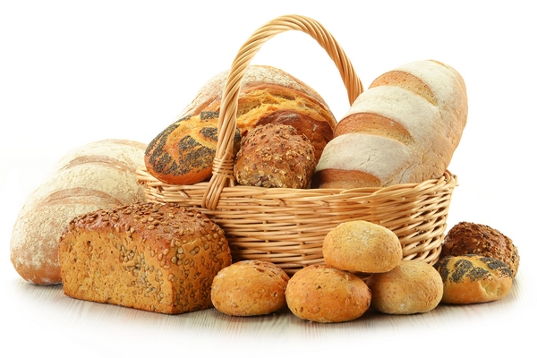
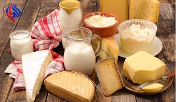
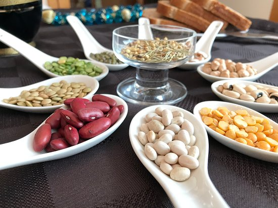
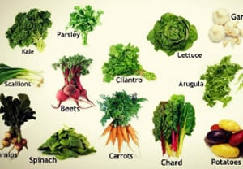
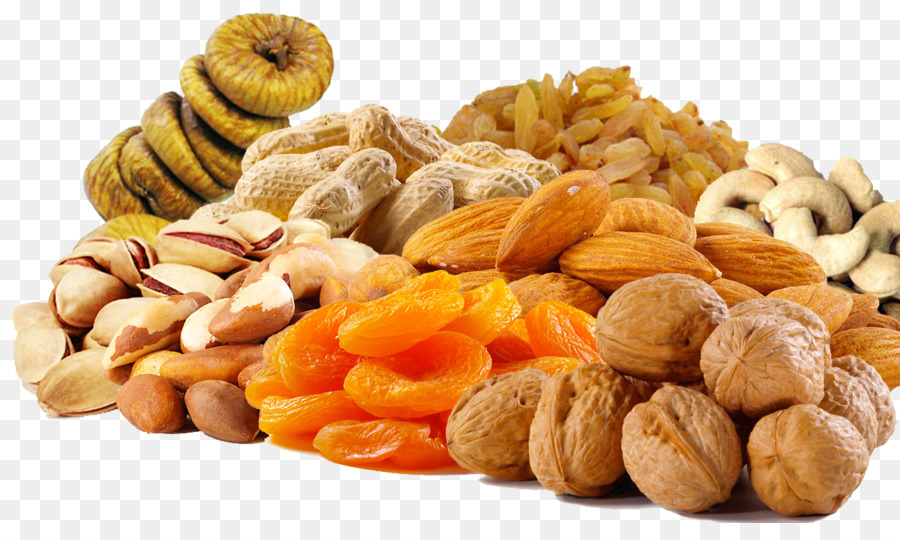
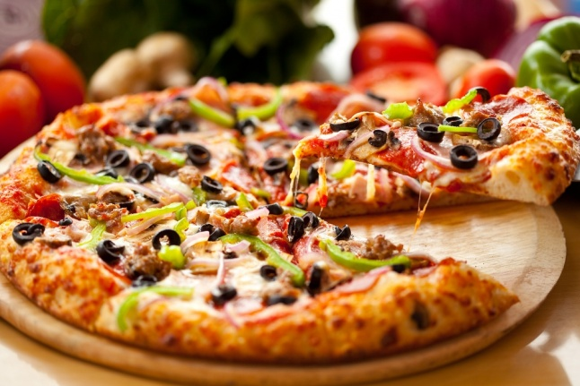
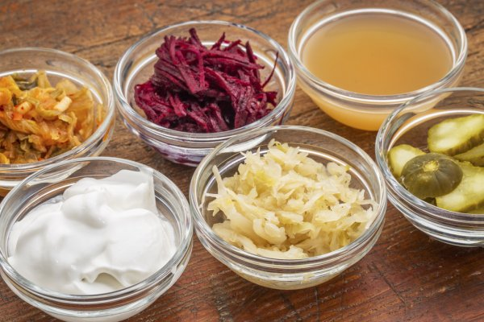
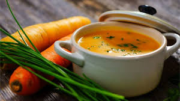
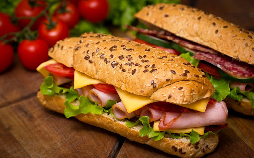
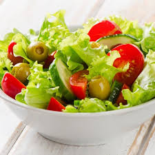

body{background: rgba(255,135,15,0.1);}
A Types of Food
Food is any substance that is consumed to provide the body with nutritional support. The food is from a plant or animal source and includes nutrients such as sugars, fats, proteins, vitamins and minerals. These substances are ingested by organisms and consumed by cells to produce energy, maintain life, and stimulate growth. Note: Due to the large number of foods there are in the world, this article has been limited to organizing "categories" of foods based on the main subcategories on the Category:Foods page, with information on basic topics and links to specialized articles.
Bread
- - It is a main food, it is prepared by preparing a bread dough of flour and water, and the baking process is done at the end to get the bread. Historical records from around the world indicate that bread is one of the oldest foods known to humans and the most important from the beginnings of human farming.

Dairy products
- - Dairy products are foods prepared from mammalian milk. Dairy products are a high energy food. The process used to produce dairy products is known as milk production. The sources of milk consumed by humans are cows in the first place, followed by goats, yaks, sheep, horses, camels and other mammals.

eggs
- -Humans have used eggs as food for thousands of years. The most popular types of eggs are chicken, duck, quail and caviar, but chicken eggs come at the top of the list.
legumes
- -Legumes are produced agriculturally, to obtain food grains (such as beans, lentils, and fava beans), or to be used as fodder for livestock and silage, or as green manure to improve the soil. Legumes are known to have nitrogen-fixing bacteria in the form of root nodules. The most important known legumes: peas, clover, alfalfa, beans, lentils, lupine, soybeans, carob, mesquite, peanuts, tamarind
- List of fried dough dishes
- List of legume dishes
- List of tofu dishes

edible plants
- -The fruit is the fleshy part of the plant that surrounds the seed, which is often sweet or sour and is edible in its raw state. Examples include apples, oranges, grapes, bananas, strawberries, and lemons. On the other hand, there are other plants that fit the same description but would not be called “fruits,” such as bean pods, wheat grains, corn, and tomatoes.
- Fruits List
- Citrus List
- List of dishes prepared with fruits

seafood
- -Seafood - Seafood is those marine organisms that humans can eat as food. It includes fish and shellfish such as crustaceans, mollusks and echinoderms.
dried foods
- -Category:Dried Food - Drying (food) is a method of food preservation, in which water is removed from food, which prevents the growth of germs in it, and this method has been used all over the world since ancient times. It is not known exactly when and where this technique was invented, but the oldest known practice of drying food dates back to 12000 BC, when it was followed by the people of the Middle East and regions of Asia

fast food
- -Fast food is a term for food that is prepared and served quickly, and it became popular in the 1950s in the United States. Meals that take a short time to prepare can also be considered fast food. The term specifically refers to food that is sold in restaurants or stored, then reheated and served in packages at fast food restaurants. As for takeaway meals, they can be sold through certain points of sale in restaurants. The term "fast food" was first introduced into the Merriam-Webster dictionary in 1951.

Fermented foods
- -The sugars are converted to alcohols, carbon dioxide, or organic acids using yeasts, beneficial bacteria, or a combination of these under anaerobic conditions. Fermentation]] means that the action of bacteria is desirable

soups
- -It is a liquid food, usually served hot (or it may be cold), and made from several ingredients such as meat and vegetables with food extracts, water or other liquids. Hot soups feature cooking and boiling the solid ingredients in liquids in a pot until they extract the flavors of those ingredients and form the broth.

sandwiches
- -Sandwiches or sandwiches are foods consisting of one or more types of food placed between two slices of bread or directly on top of the bread, or in a more general sense, a dish in which two or more pieces of bread are used as a wrapper to contain or wrap some other food. Sandwiches were originally one of the foods eaten with hands, and it started and spread in the beginning in the Western world, but today it is spread all over the world in different forms and shapes.

salad
- -Salad is a ready-to-eat food, usually containing leafy green vegetables, and served cold or at a moderate temperature and served with a sauce or dressing. The salad may contain other ingredients such as fruits, grains, meat, seafood or sweets. Most salads contain raw ingredients, but some contain cooked ingredients.
- Baba ghanoush
- Zaalouk salad
